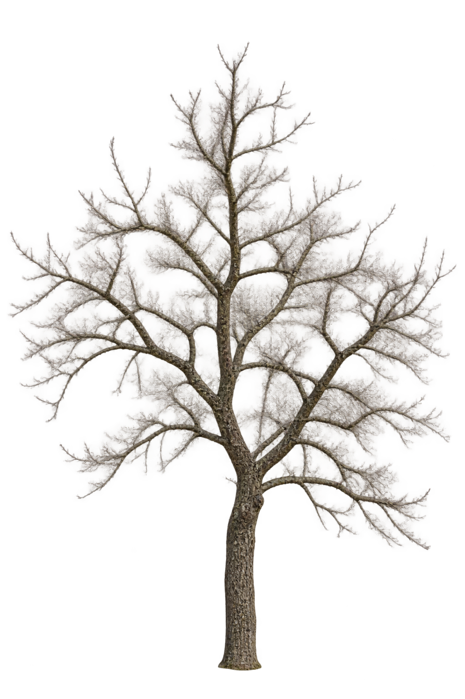
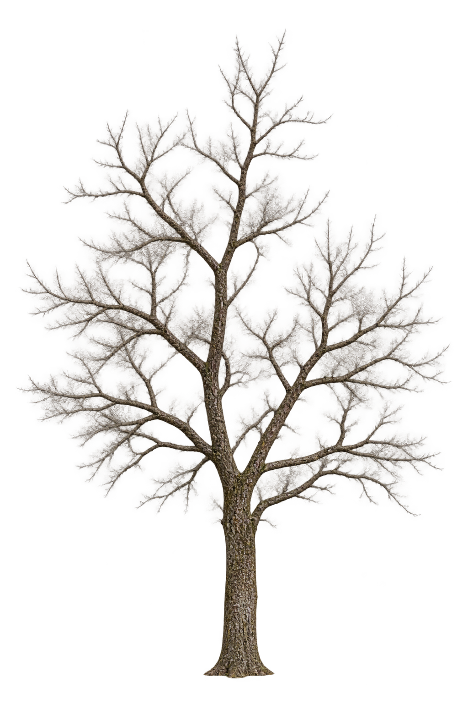

1/1 generated as CALIBRATION_CANDIDATE. Spend gate DENIED after this run. HIGH calls = 0. Native inspection is primary. Do not auto-approve.
runId design-asset-branch-structure-calibration-1. Prompt design-cutout-branch-structure-v2-experiment. Quality medium only. This is not a sharpness A/B. Native 100/150/200, filter:none, checkerboard. No Blend.
CONTROL — old Detail V2 + medium
design-cutout-visual-state-detail-v2 · quality=medium · brown ghosting failure · HISTORICAL CONTROL — NOT APPROVED

filter:none. No blend.
HISTORICAL CONTROL — NOT APPROVED. Do not modify, re-encode, or overwrite. Brown ghosting failure.
NEW — Branch Structure V2 + medium
design-cutout-branch-structure-v2-experiment · quality=medium · CALIBRATION_CANDIDATE · not production-approved

filter:none. No blend.
No universal magic threshold. Owner visual review remains authoritative. Compare a future candidate against this failed control.
If NEW medium is clean, readable, and alpha-ghosting is materially fixed: BRANCH_STRUCTURE → MEDIUM_POLICY_VALIDATED. Do not require HIGH. If haze/alpha failure persists: STOP, BRANCH_ALPHA_PROBLEM_PERSISTS, do not auto-run HIGH.